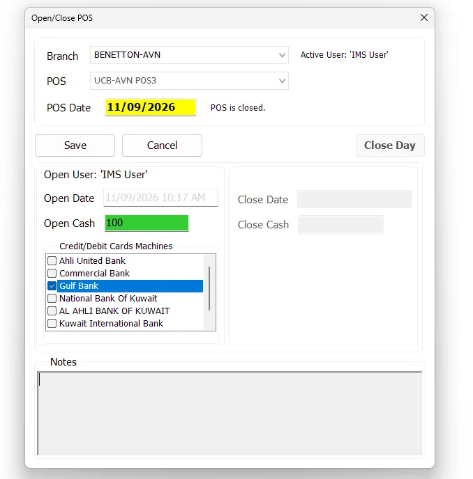
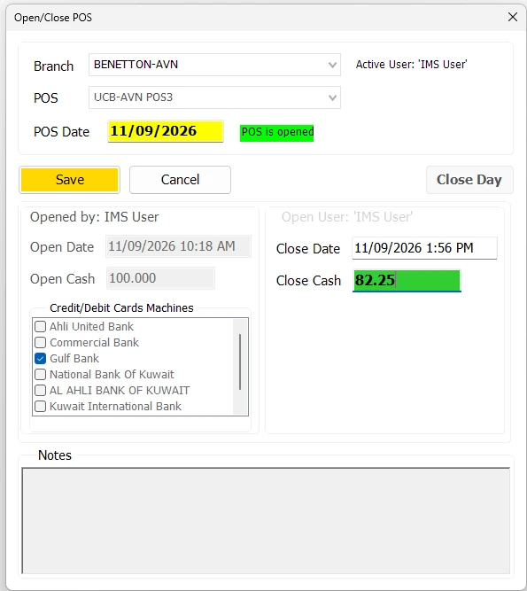
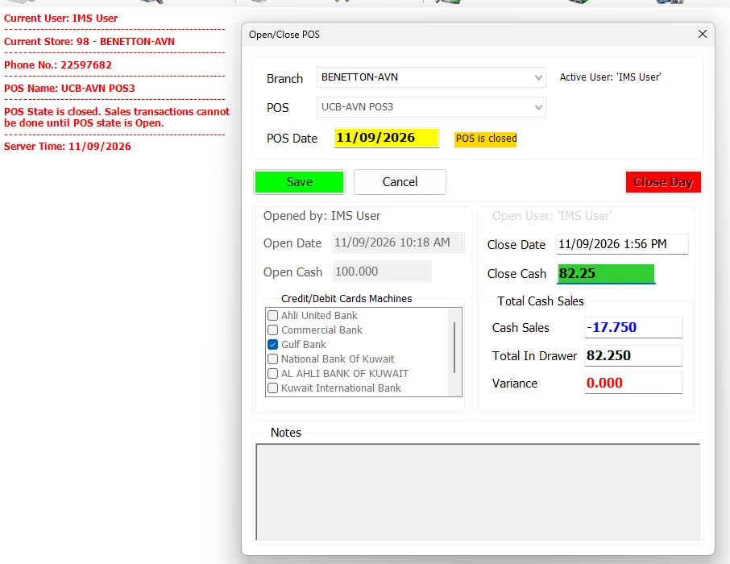

Open/Close POS
Open/Close POS controls the working shift for a selected Branch and POS. It records the POS date, opening cash, active credit/debit card machines, opening/closing users and times, notes, closing cash, and the final cash reconciliation used when the business day is closed.
POS operating states
| State | Meaning |
|---|---|
| POS is closed | No shift is active, but the POS business day may still be available. The main toolbar action is Open POS. If a shift was already closed for this business date, an authorized user can either open another shift or permanently close the day. |
| POS is opened | A shift is active. The main toolbar action changes to Close POS. |
| Day is Closed | The POS day has been permanently ended for that POS date. Sales cannot be made for that closed day, and IMS will not reopen the same day. |
Open a shift

- Select the required Branch and POS. IMS normally identifies the local POS from the workstation IP where a matching POS configuration exists.
- Click Open Shift.
- Review the POS Date and opening time.
- Enter the Open Cash. If left blank, IMS records zero.
- Select at least one active Credit/Debit Cards Machine.
- Enter an optional opening Note.
- Click Save.
After a successful open, the main toolbar changes from Open POS to Close POS. The main screen also shows the active POS date and the card/bank machines selected for that shift.
Close the active POS shift
When a shift is active, click Close POS from the main toolbar. IMS opens the closing state of Open/Close POS and enables the closing information for the current shift.

- Open Close POS for the active Branch/POS.
- Review the POS Date, Open Date and Open Cash.
- Enter the physical cash counted in the drawer as Close Cash.
- Add an optional closing Note.
- Click Save to close the shift.
Closing the shift records the closing time/user and cash count, but it does not permanently end the POS business day. After Save, the POS state becomes POS is closed.
Reconcile and Close Day
Once the shift has been closed, IMS displays the cash reconciliation for the POS date. This is the checkpoint before the authorized user permanently closes the business day.

| Field | Meaning |
|---|---|
| Open Cash | The cash float recorded when the POS shift was opened. |
| Cash Sales | The net cash movement calculated by IMS for the selected POS and POS Date. Because refunds reduce cash activity, this value can be negative. |
| Total In Drawer | Open Cash + Cash Sales. For example, Open Cash 100.000 plus Cash Sales -17.750 results in 82.250 expected in the drawer. |
| Close Cash | The physical cash count entered when the shift was closed. |
| Variance | Close Cash − Total In Drawer. A zero variance means the counted drawer matches the amount expected by IMS. |
Close Day is separate from closing the shift. It permanently ends that POS business date and is available only to users whose Group Policy includes End POS Day.
Screen information
| Area | Information |
|---|---|
| Branch / POS | The Store and configured POS terminal whose shift is being managed. |
| POS Date | The active business date for that POS. |
| Opened by / Open Date | User and server date/time that opened the shift. |
| Open Cash | Cash float recorded when the shift was opened. |
| Credit/Debit Cards Machines | The bank/card-machine definitions active during the shift. |
| Closed by / Close Date | User and server date/time that closed the active shift. |
| Close Cash | Physical cash recorded during close. |
| Notes | Opening and closing notes retained with the shift record. |
Permissions and safeguards
Open/Close POS respects IMS maintenance mode and database-connection checks. The separate Close Day action is hidden when the active user's Group Policy does not include the End POS Day permission.
This distinction lets normal shift operators open/close shifts while reserving permanent end-of-day control for the appropriate role.